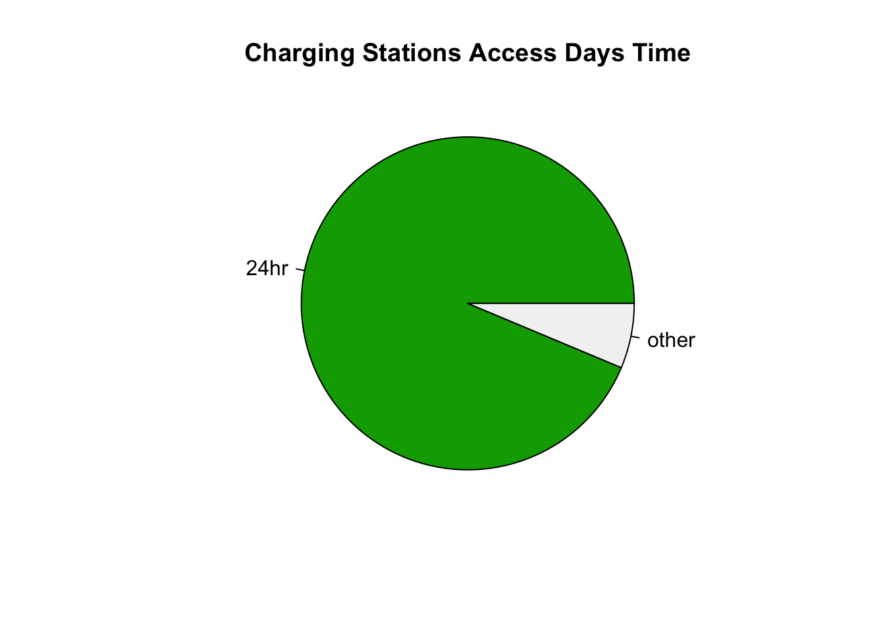
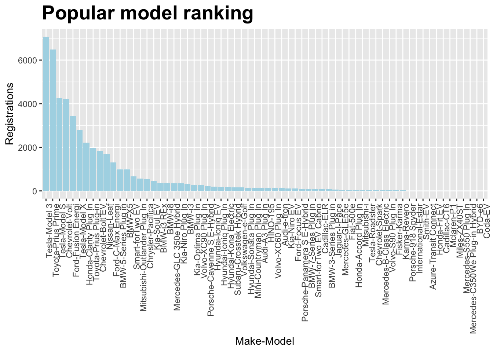
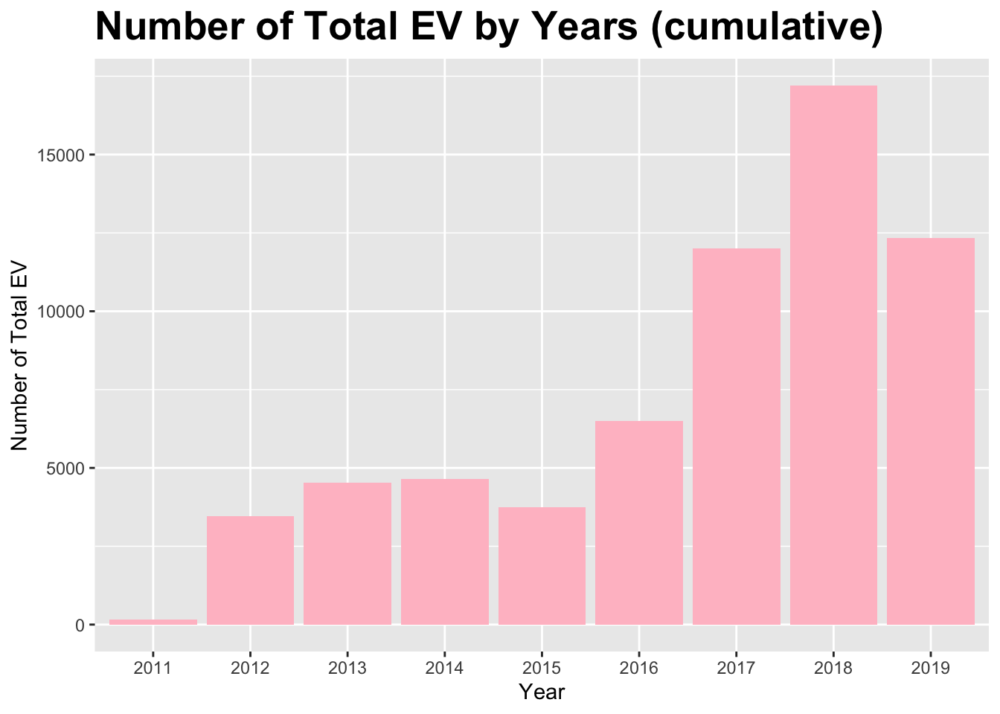
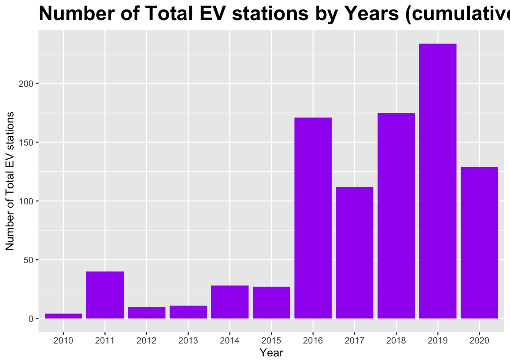

Chapter 5 Results
EV registrations and stations continued to grow in the past 10 years, which may become a new vehicle trend
From 2011 to 2018, the number of EV registrations and charging stations has generally increased. By 2018, the number of EV registrations in New York reached its peak, with a total of approximately 19,000 units. The number of EV charging stations is about 175. In 2019, the number of EV registrations decreased slightly, while the number of charging stations continued to increase. As far as the growth rate is concerned, the number of EV registrations and charging stations has generally shown a steady growth trend except for the dramatic increase in the number of EV charging stations in New York in 2016. According to this article(https://brooklyneagle.com/articles/2019/03/18/electric-car-charging-stations/), New York’s mayor Bill de Blasio required DOT to install charging stations in all municipal parking lots in 2016, which might be the reason why the number of stations had a dramatic increase in 2016. As for the decline in the number of EV registrations in 2019, we haven’t found a reasonable explanation yet. We believe it might be a normal market fluctuation. Besides, through reasonable expectations, the COVID-19 epidemic will definitely have an impact on the EV market. However, due to the lack of data on EV registrations in 2020, it is hard to determine the specific degree of impact. However, according to the change in the number of charging stations in 2020, it can be seen that in 2020, nearly 100 EV stations decreased in New York. This shows that COVID-19 has a certain negative impact on the popularity of EVs. But this negative impact covers almost every field and due to time constraints, in this project, we will temporarily ignore the impact of it. After this course, we may continue to work on this project out of interest and explore the influence of COVID-19 deeply.

According to the ‘Charging Stations Access Days Time’ graph, around 90% of the charging stations in New York are 24-hours, which is very convinent for EV owners. We may expect that in the near future, charing stations will no longer be a problem.

From the graph, we can know most of the charging stations are privately owned. It means most of the EV owners have their own charging stations.

Around 80% of the chargers are level 2-AC 240V chargers. And then DC fast-DC rapid charing others and DC fast-Tesla account for around 10% each.

From the graph, it seems that most people like Tesla-Model 3 and Toyota-Prius Prime.
In new york, Suffolk is the county with the most EV registrations. Then the following is Nassau county and Westchester County.
From the two graph above, it seems that in the middle part of new york, there are EV owners but no charging stations for them. It seems the the charing stations is still the most urgent problem at least for now.



In order to see the change clearer, We scaled the growth rate of each year.